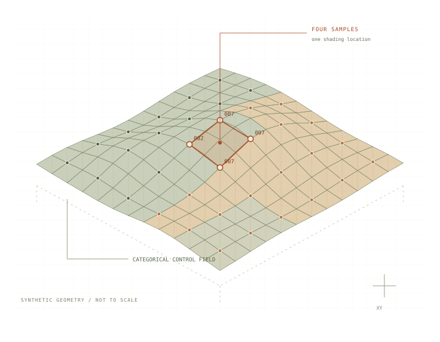
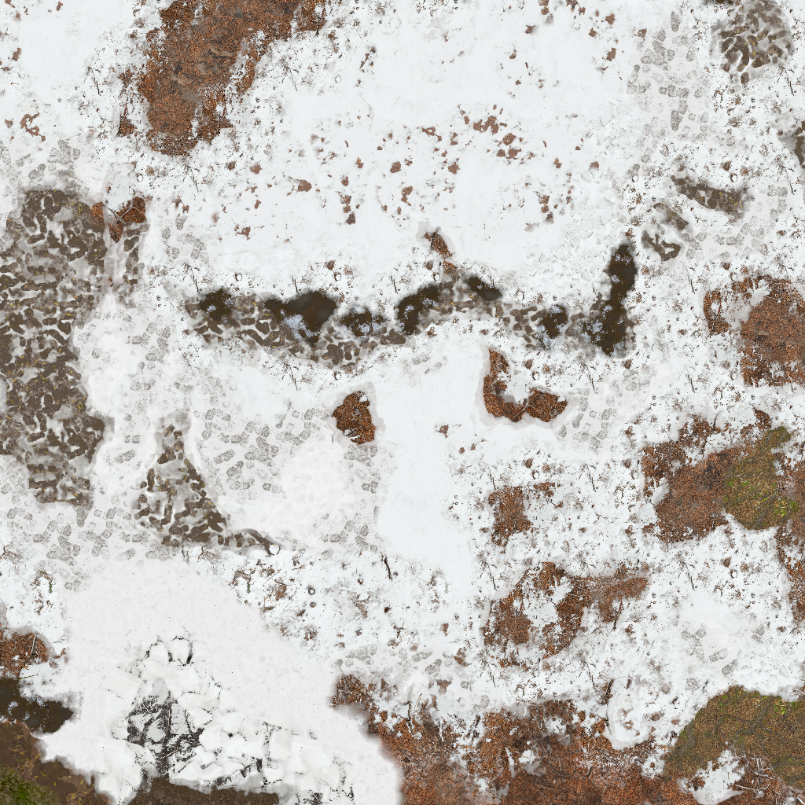
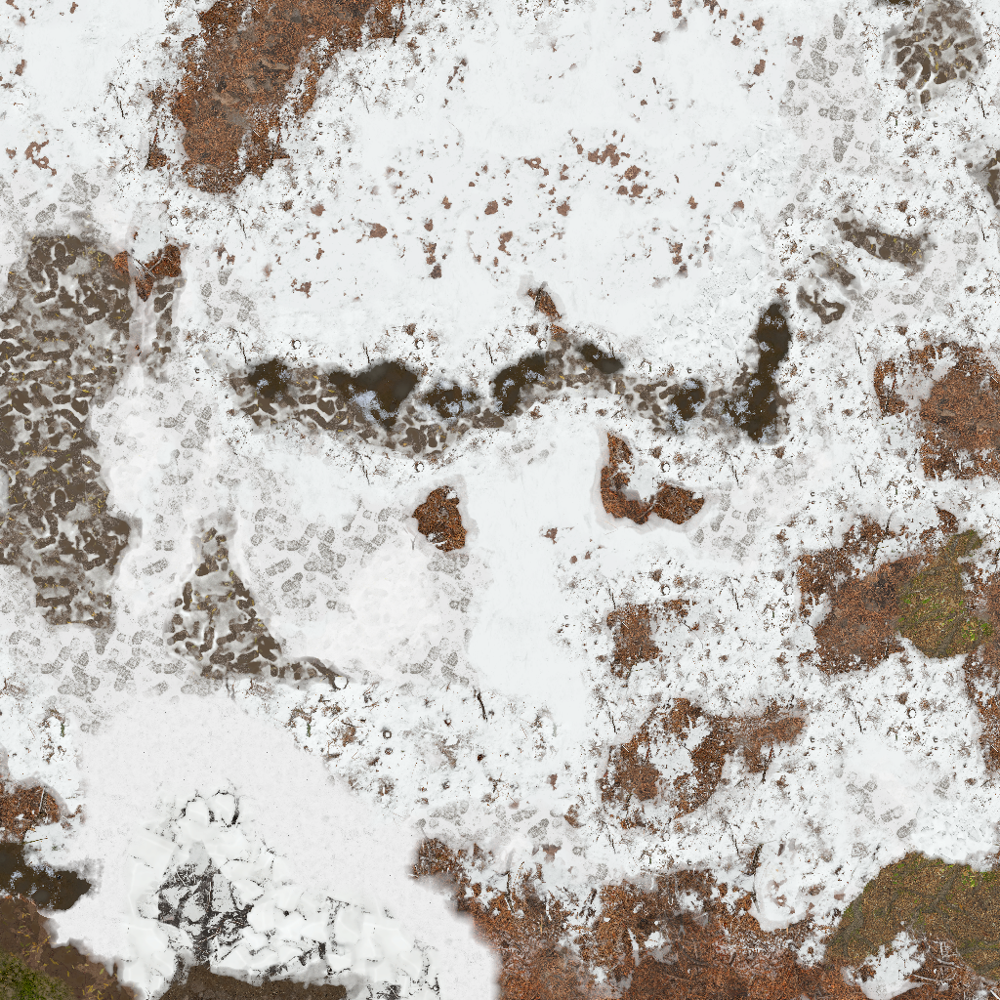
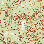

GRAPHICS RESEARCH / BLACK OPS COLD WAR
Terrain, one
material
at a time.
Cold War’s own terrain materials, blended live in Black Ops 3. Follow the original inputs, the translated shader and the evidence behind the result.

COLD WAR → BLACK OPS 3 / ZM_SILVER
Original layers. Live, per-pixel blending.
The Black Ops 3 terrain uses Cold War’s own zm_silver layer textures, taken directly from the game, together with the exported 300-entry layer table (44 captured records plus 256 zero-filled padding records) and its control maps. The layer-record and control-map values stay unchanged. Each captured layer texture keeps its native resolution: the layer textures are packed into material atlases without resizing, then BO3 compresses those atlases again. Control maps stay uncompressed.
Cold War’s translated terrain shader blends the layers live, per pixel, in game. The terrain material is never baked or blended in advance.
The terrain now has surface-based footsteps and impacts. Cold War’s captured collision surface map selects snow, rock, dirt, ice, mud and concrete responses in BO3. Six surface variants share the same visual shader with the base material. How the sounds and seamless blend work together.
How the original inputs reach BO3An ID is a category.
Interpolate coverage, not material numbers.
control samples
after combining
material result
01 / FOLLOW THE EVIDENCE
From a live map
to a replayable question.
The capture path matters as much as the equation.
Trace each step into the pinned Greyhound fork.
A shader hash identifies the program. It does not identify all the state that made a pixel.
The study separates source-layer material shaders, renderer-owned composition, saved resources, and the inputs reconstructed for replay.
Read the capture walkthrough- 01
Discover & collect
Find the terrain structures, surface-local images, tile records and source-material resources. Capture the renderer’s composition program separately.
Capture lifecycle and code references - 02
Preserve the replay inputs
A normal successful GUI export removes its temporary work directory. Archiving resources and proving their completeness are explicit parts of reproduction.
Export cleanup and archival boundaries - 03
Bind & dispatch
Verify the supported bytecode hash. Reconstruct constants, bind resources and execute the saved-input reference through D3D12 WARP.
The replay contract, line by line - 04
Compare aligned outputs
Match world positions and footprints. Measure selected raw output channels, validity and outliers before interpreting exported images.
Metrics and reproduction
02 / A SAVED MEASUREMENT
Close agreement.
A precise boundary.
One 1024 × 1024 tile, under reconstructed bake inputs.
Historical report; no fresh game capture or replay is claimed.
Cold War’s own shader supplies the reference.
The reference bake executes Cold War’s captured terrain composition bytecode unchanged, using captured layer textures, records and control maps. This preserves the original shader’s material logic under the documented replay inputs. Dispatch constants and samplers are reconstructed, so this is a faithful reference for that saved-input configuration; it does not establish a synchronized final in-game frame.






Error scale /255: 0≤1≤2≤5>5. Block maxima enlarge isolated errors.
82.24% of saved preview pixels have identical RGB; 98.88% differ by at most 1/255 in every colour channel. These are measurements of the rounded 8-bit previews, separate from the historical float-output report below. Read the image checks and remaining limits ↗
1,048,576 mutually valid texels.
100% validity agreement in this saved comparison.
| Output channel | Mean | P99 | Maximum |
|---|---|---|---|
| Colour encoded RGB | 0.113354 | 1.293148 | 112.652756 |
| Normal raw encoded XY | 0.017280 | 0.293564 | 25.848127 |
| Roughness | 0.141972 | 1.245334 | 77.652832 |
| Ambient occlusion | 0.144955 | 0.785144 | 17.455154 |
Percentiles pool selected scalar components. The normal metric is not an angular error. Large maxima remain unexplained.
What this result supports: agreement with this saved-input bake configuration. Reconstructed dispatch constants, provisional samplers, omitted weather globals, independent decals, distant footprints and unmeasured channels remain outside a full equivalence claim.
Read the limits03 / THE COMPLETE FIELD NOTES
Take the longer route.
Mechanics, capture, translation and evidence.
Every claim belongs to a defined scope.
OMPV mechanics
Coordinates, categorical IDs, associated colour, numeric order and reveal.
Cold War evidence
Captured formats, surface bindings and the composition-shader distinction.
The shader port
DXIL translation, resource atlases, derivatives and output interpretation.
Validation & reproduction
The saved comparison, its outliers and the checks you can run.
Sources & provenance
Primary presentations, pinned code and file-content hashes.
The capture workflow
Follow the actual Greyhound export lifecycle into the source.
The replay contract
What the D3D12 runner binds, reconstructs and executes.
Observed shader experiments
Instrumented selection and reveal equations, with their evidence boundary.
Surface sounds & collision
Captured ground types, seven shared-shader materials, footsteps and navmesh.
START WITH THE PRIMARY SOURCES
04 / OPTIONAL WORKED EXAMPLEExplore how four samples become material coverageSee how three ID 7 corners share one coverage value as you move the sample.
SYNTHETIC WORKED EXAMPLE
How repeated IDs combine.
Start with Repeated IDs, then move U or V. Watch the three ID 7 samples combine into one material’s coverage.
Define the control map
One byte ID per texel. Every integer from 0 to 255 is valid.
An illustrative rule inspired by the public presentation. Not the recovered Cold War shader.
Choose a shading location
| Tap | Texel | ID | Weight |
|---|
Combine, order, reveal
2 participating layers. Numeric ID order; the minimum ID is the opaque base.
Flat synthetic material colours × associated RGB controls. This preview contains no game textures.
Read the calculationWEIGHTS / CONTROLS / REVEAL
Gather at texel centres
p = uv × size − 0.5 f = p − floor(p) w = [(1−x)(1−y), x(1−y), (1−x)y, xy]
Tap order is TL, TR, BL, BR. Each coordinate clamps at the map edge; repeated edge loads still combine.
Keep colour with its material
Aₘ = Σ wᵢ where IDᵢ = m Cₘ = Σ wᵢ × controlᵢ where IDᵢ = m meanₘ = Cₘ / Aₘ
The coloured controls never mix across IDs before material evaluation. The trace reports both the weighted sum and the mean.
Teaching reveal rule
α = clamp(2 × coverage − 1 + reveal) result = (1−α) × previous + α × layer
The first participating layer is opaque. Later layers can occlude earlier ones, so final weights differ from bilinear coverage.
The browser teaching model is checked against the Python reference. The observed reveal equation is a separately scoped experiment. Neither mode reproduces the complete renderer.